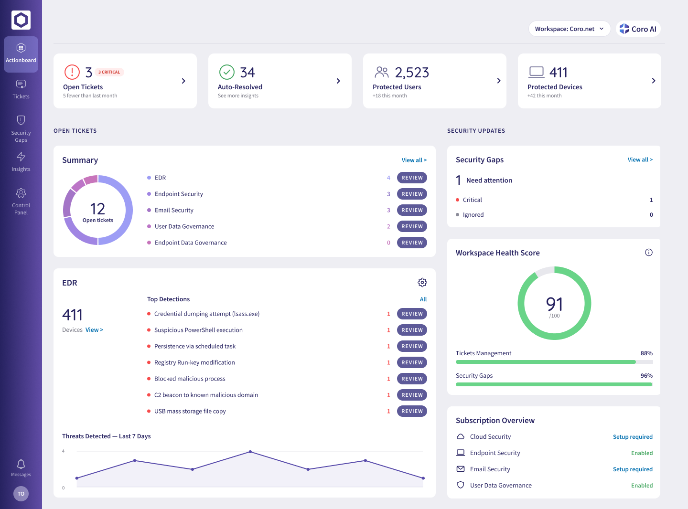

Explain before acting
The agent opens with a plain-language verdict: what is happening and what it's based on.
First Product Designer, Coro

Coro is a cybersecurity platform for companies without a security team. As its first product designer, I designed the console, its design system, and the EDR module from zero. This case follows one thread through that work: taking tools built for security analysts and making them usable for IT people, for whom security is one part of a long day. It ends with an AI layer that takes the same idea one step further.
The user
Endpoint detection and response (EDR) records what runs on every device and flags what looks malicious. In most products it assumes a security operations center: trained analysts who read process trees and write queries all day. Coro's customers usually don't have one.
The person who opens the EDR is the IT admin, who also handles laptops, accounts and the printer that stopped working. They need to know what something means and what to do about it, and they search by what they already know: a device, a user, a program.
Keep the analyst's power. Remove the analyst's requirements.
Chapter 1
The EDR module has three parts: Processes, Telemetry and Allow/Block lists. Each one started from a question an IT admin would actually ask.
"What is this, and where is it running?"
Raw EDR data arrives as separate events on separate devices. An IT admin doesn't think in events. They think in programs and machines. The Processes tab groups activity by process and shows how many devices run it, where it lives on disk, under which names, and which open tickets it has triggered. Response actions sit right on the process, so the next step is in the same place as the question.
"What will happen if I click this?"
The Allow/Block list holds every exception, each with its reason. Allowing a process means the EDR stops watching it, which is a big decision to make in a small dialog. The dialog says in plain words what will change: no more tickets, and no data in Telemetry or Processes. When someone tries to allow a system process that attackers commonly abuse, the console stops them and explains why, instead of failing silently or trusting them blindly.
"Show me everything this user did on this device."
Investigating an incident often means searching several values at once: a specific user and a specific event. With single-value search, admins ran separate searches and cross-checked the results in their heads. The search bar became a guided query builder. Pick a field, an operator and a value, and each condition becomes a chip; chips stack into one combined query. The field menu opens into forensic values like registry keys, account events and scheduled tasks, and an expanded row lays out each record in labeled fields.
Outcome
Opening EDR to IT admins meant more kinds of customers could use it. In this form it became part of Coro's product package, and it helped sell the module to existing customers and bring in new ones.
From data to AI
I designed this concept in 2025, when AI agents inside security consoles were still rare and far less capable than today. It grew out of the EDR work. I knew where IT admins got stuck: the data was all there, but turning it into a decision still took an analyst's knowledge. An AI layer could close that gap.
The harder question was how far it should go. If it acts alone, the admin loses control of their own environment. If it only adds text, it adds noise. I designed for what the agent should never take away from the admin, so the principles would hold as the technology got better.
Chapter 2
One incident, followed from the Actionboard to a resolved, documented ticket. Jordan is an IT Security Administrator: hands-on and security-savvy, but not an analyst.
The agent opens with a plain-language verdict: what is happening and what it's based on.
Each recommended action says what it fixes and what it costs users, before anyone selects it.
Nothing runs without explicit approval. A skipped recommendation keeps its reason on record.
The flow
Actionboard
3 gaps need attention
Names the threat
One gap to handle first
Recommends 3 actions
Each shows its cost
Picks 2 of 3
Skips Contain
Confirms
Only his picks run
Resolved
Logged, can reopen
Screen 1
Jordan's day begins on the Actionboard. The most critical signals sit in the top band: open tickets, security gaps and the Workspace Health Score. Detail waits one level down. Today three Security Gaps need attention, and Coro AI is one click away in the header, as it is on every screen.
Screen 2
Opening Coro AI doesn't pour every alert onto Jordan. The agent correlates EDR telemetry across devices and gives one plain-language verdict: an active credential-theft chain on 3 devices, a confirmed threat that needs action now. It points to the one gap to handle first and names only the two others. Actions stay out of this panel on purpose: the agent directs, the ticket is where you act.
Screen 3
Inside the ticket, Coro AI's analysis sits above three recommended actions: Contain, Eradicate and Recover. Each one says what it fixes and what it costs users. Isolation cuts devices off the network; a credential reset makes affected users sign in again. The AI recommends all three. Jordan sees no lateral movement or active C2 in the evidence, so he selects two and leaves Contain unchecked.
Screen 4
Before anything executes, a pop-up lists exactly what Jordan selected: Terminate Process & Remove Persistence, and Force Credential Reset. Nothing else. Cancel returns him to his selection untouched; Apply Actions runs them.
Screen 5
The ticket resolves in place. The list stays, only this row turns green, and a toast confirms the Workspace Health Score is restored. Applied actions lock as history, while the skipped one stays visible with Jordan's reason. His comment and the activity log record what was done, what wasn't, and why. Reopen stays one click away if the threat comes back.
Reflection
More work